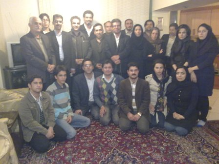

|
|
دیدار فعالین مدنی کرمانشاه با خانواده کاوه قاسمی کرمانشاهی
دو شنبه13 اردیبهشت 1389

تغییر برای برابری - به گزارش همراهان کاوه کرمانشاهی، همزمان با نودمین روز بازداشت کاوه قاسمی کرمانشاهی، جمعی از فعالین مدنی کرمانشاه با حضور در خانه این فعال خوشنام حقوق بشر با مادر وی دیدار نمودند. حضور طیف وسیع فعالین سیاسی مدنی کرمانشاه از جمله اعضای جبهه مشارکت، جامعه دانش آموختگان کرمانشاه (جاداک)، کانون مهر کرمانشاه، فعالین دانشجویی عضو تحکیم وحدت، روزنامه نگاران نشریات محلی کرمانشاه، اعضای شعبه کرمانشاه سازمان ادوار و فعالین سازمانهای غیردولتی در این دیدار قابل توجه بوده است.
در این دیدار مادر کاوه با ذکر این مطلب که از جانب دادستانی کرمانشاه وعده آزادی پسرش پس از پایان قرار سومش را داده اند ابراز امیدواری نمود که قرار باداشت فرزندش تمدید نشده و وی آزاد گردد. فعالین حاضر در این دیدار ضمن ستایش فعالیتهای حقوق بشری کاوه بر بی گناهی وی تاکید نموده و ابراز امیدواری نمودند که قول مسئولین قضایی مبنی بر آزادی وی تحقق یابد.
لازم به ذکر است کاوه قاسمی از تاریخ 14 بهمن ماه سال گذشته تاکنون در بازداشت اطلاعات کرمانشاه بوده و در این مدت جهت قبول اتهاماتی واهی چون جاسوسی تحت فشار شدید قرار داشته است. قرار بازداشت وی تاکنون 2 بار تمدید شده است و طی این مدت تنها 2 بار با خانواده ملافات کرده است، امکان تماس تلفنی از وی سلب گردیده و وضعیت پرونده و موارد اتهامی وی همچنان در ابهام قرار دارد.